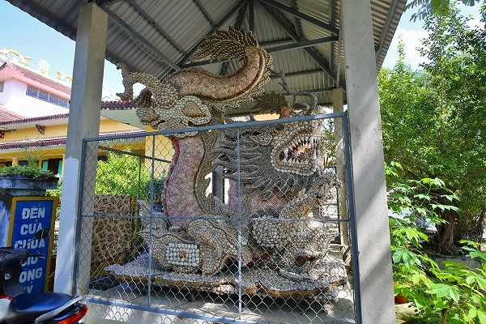

ダラットでの修行を終え、再びニャチャンに戻ってきた。
ニャチャンでは様々なミッションが目白押しである。
まずは南国リゾートに浮かれまくるロシア人ウォッチ、そして温泉でのロシア人ウオッチ、さらに連中が最もはじけているであろうクラブでのロシア人ウオッチ…
それらの重要案件を差し置いてまずは押さえておきたいのがこのツーバン寺である。
この寺はとあるモノで地元では有名なのだが、日本ではほとんど知られていないと思う。
まあ、それが何かは追々紹介するとしてまずこの寺の所在について。
この寺はニャチャンの隣のカムランという街にある。
ニャチャンに行く際に使う空港はカムラン空港といい、カムランとニャチャンの間にあるのだ。

カムランの街外れにある寺だが、規模は中々大きい。
入口近くにはこんな立派な寝釈迦さんがいたり。
その前にはこんな立派な香炉があったりして。
ここが、一応本堂、という事になるんだと思う。
内部。
この千手観音凄くないすか？
獅子に乗った4人のおっさんが支えている。
千手観音の手には全て眼が付いている。
いわゆる千手千眼観音というヤツ。
本堂の前には貝と岩でできた祠が。
その裏には武骨な岩でできた塀。
にしてもコンクリ仏の多い寺だなあ。

貝のモザイクで出来た巨大な龍。
…というわけで、いよいよこの寺のメインディッシュの登場だ。
珊瑚と石で構成された戒壇巡りなのである。
鬱蒼とした草木に覆われていてその全容はつかめない。
ただ、入る前からこれはかなり大規模だ、という事だけは直感で判る。
受付で幾ばくかの入場料を払うと若いガイドのあんちゃんが付いてくる。
案内人は妙に早口で説明をしてくれる。悪いけど全然判んないっす…。
洞窟風の内部は珊瑚や石が積まれている。
特別な場所と思われる所は貝がらで装飾されている。
石積み、とはいえ所々明り取りのために隙間がある。
なので全く見えないわけではないが、狭いし見通しは悪いし、所々かなり暗いし、なのでかなり慎重に歩を進めたいのだが…
ガイドのあんちゃんがどんどん先に行っちゃうんですよ。
ホラ、早く早く早く〜、というような意味のことをずーっと叫んでどんどん先に行っちゃうのだ。
申し訳ないがアンタと同じペースで歩いたらケガするし、写真も撮れないんでゆっくり行かせてもらいますわ。
廻廊は延々と続く。
一体こんな長い廻廊、境内のどこにあったのだろう。
ああ、そういえば本堂の裏手にあった岩壁がこの廻廊の一部だったのか。
時々、このような天井の高いホールのようなところがある。
採光もしてあり、神秘的な空間に仕上がっている。
とっとと先へ行っていたあんちゃんだが、ここは説明しないといけないと思ったのか、我々が来るのを待っていてくれた。
壁に書かれた文字を懐中電灯で照らしていた。
ここからグッと廻廊の雰囲気は変わる。
灯りがなく、暗く湿った雰囲気になる。
ああ、地獄なのね。
いわゆる十大地獄のレリーフなのだろう。
入口に12何とか、とあったから12代地獄なのかな。
レリーフの内容はあの世での裁判の様子。
中国の影響を受けてここもやはり十王の裁きのシーンが中心になっている。
にしても下手だなあ。
しかも湿気で汚れちゃってるし。
何だか見ているだけで寂しい気持ちになって来る地獄だ。
地獄と言えば普通、おどろおどろしくて、視覚的にも過剰ににぎやかで見ているこちら側もテンションが上がる場合が多いのだが、ここの地獄は悲しいほど静かで寂しい。
…こんなしんみりした地獄はイヤだな。
観音様のレリーフは作者が違うのだろう。まあまあの出来でした。
さらに廻廊は続く。
最早、時間や空間感覚もあやふやになり、何時間も彷徨っているような気分に。
一本道なので迷う事はないが、それでもいつ終わるのか判らない不安感が常に付きまとう。
途中にあった橋。
これも写真で見ると結構明るいが、実際にはかなり足元は暗く、先にある明り取りを見ていたら池に落ちるところだった。
その明り取り。石を積み上げて格子のようにしてある。
この廻廊にある明り取りで一番美しい形だった。

そうこうしている内に通路が水浸しになっているじゃないか！
ここ数日の雨で通路に水が溜まってしまったのだ。
あんちゃんはズボンの裾を捲ってサンダルでズンズン進んでいく。
こっちはスニーカーなんですけど…。裸足で入ったら破傷風になりそうだし、スニーカー泥だらけも勘弁願いたい。
あんちゃんは「早く、早く来いよー」と絶叫してるし。
仕方がない。
カンフー映画よろしく足を目一杯広げ、壁と壁に手と足をついて何とか水没地点を渡り切った。
…というわけで最後に難所はあったものの廻廊巡りは無事終了。
デジカメのデータを後で見てみると1時間も暗闇を彷徨っていたことになる。
出口は口の中。
振り返ると巨大な龍の口だった。
つまり、この廻廊は龍の胎内巡り、という設定だったのだ。
龍の脇には凄いお堂が。
これもまた珊瑚と石で出来ている。
内部はかなり装飾的だ。
尖塔部分の内側は上まで吹き抜けになっており、所々採光されている。
内部は貝がらで装飾されている。
ベトナム版のグロッタだ。
この辺のモザイク作らせるとベトナムの人は上手いなあ。
改めて見ると境内はかなり広く、その敷地内に縦横無尽に龍の胴体がのたうち回っていたのだ。
これだから1時間近くも歩いたんだなあ。
明り取りは外から見るとこんな。
龍の胴体は場所によっては草木に覆われて遺跡みたい。
折角だから行けるところまで行ってみよう。
龍の尻尾は僧院の脇で終わっていた。
そこはトイレでした…。
それにしても物凄い執念だと思う。
石や珊瑚を少しづつ積み上げていく。何人の人々が建設に携わったのかは知らないが、気の遠くなるような作業だ。
このように非生産的なのに巨大な施設を造るのが信仰心のなせる業なのだ。
龍の胴体に祭壇がしつらえてあった。
大量の道教の神様が祀ってあった。
その傍らには小さな人工の洞窟が。
この中で瞑想したりするんだろうか。
シダが生えてきてお城みたいだなあ。
敷地の外から見たら外壁も龍の一部だったんですね。
この後、車が全然捕まらなかったので、数キロ離れたバスターミナルまで延々と歩く羽目に。疲れたー！
結局ニャチャン（カムラン）で本格的に見たのはここのお寺くらいだった。
あとはひたすらロシア人観察のため海鮮料理屋にいったりクラブに行ったりビーチに行ったり温泉に行ったりの日々でした…。
次へGO！